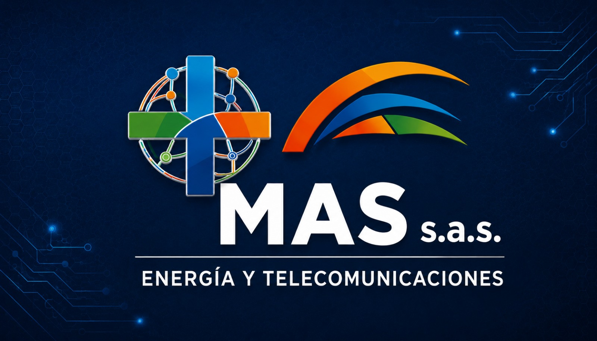

☀️ Energía solar
Soluciones fotovoltaicas para aplicaciones residenciales y empresariales.
Soluciones para empresas, instituciones y hogares: energía solar, radioenlaces, redes y conectividad.
Solicitar cotizaciónVer serviciosSoluciones fotovoltaicas para aplicaciones residenciales y empresariales.
Interconexión de sedes mediante enlaces inalámbricos para proyectos locales y nacionales.
Opciones de conectividad mediante tecnologías satelitales como Starlink.
Implementación y soporte de infraestructura de red y comunicaciones.
Diagnóstico, mantenimiento y atención de incidentes técnicos. Consulta disponibilidad de atención de emergencias.
Planeación y ejecución de soluciones de energía y telecomunicaciones de acuerdo con cada necesidad.
Integramos tecnologías de energía y conectividad para impulsar la operación de nuestros clientes.
Atendemos solicitudes desde Turbaco, Bolívar, y evaluamos proyectos en otras regiones de Colombia.
Hablemos de tu proyecto
Estamos preparando una galería con fotografías reales de instalaciones y trabajos realizados. No mostramos imágenes ficticias como si fueran proyectos ejecutados.
Espacio para fotografías de sistemas solares.
Espacio para fotografías de radioenlaces, antenas y redes.
Espacio para documentar proyectos y equipos instalados.


Cuéntanos qué necesitas conectar, instalar o mantener. Te ayudamos a evaluar una solución.
WhatsApp: 323 340 1670Turbaco, Bolívar · Colombia